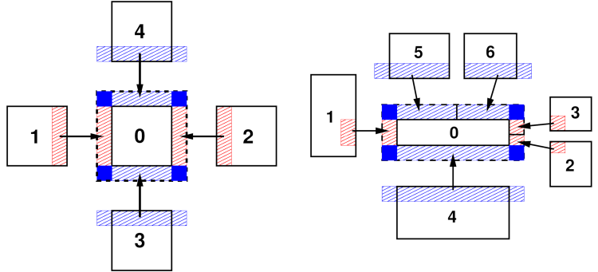

\(\renewcommand{\AA}{\text{Å}}\)
4.4.2. Communication
Following the selected partitioning scheme, all per-atom data is distributed across the MPI processes, which allows LAMMPS to handle very large systems provided it uses a correspondingly large number of MPI processes. To be able to compute the short-range interactions, MPI processes need not only access to the data of atoms they “own” but also information about atoms from neighboring subdomains, in LAMMPS referred to as “ghost” atoms. These are copies of atoms storing required per-atom data for up to the communication cutoff distance. The green dashed-line boxes in the Domain decomposition schemes figure illustrate the extended ghost-atom subdomain for one processor.
This approach is also used to implement periodic boundary conditions: atoms that lie within the cutoff distance across a periodic boundary are also stored as ghost atoms and taken from the periodic replication of the subdomain, which may be the same subdomain, e.g. if running in serial. As a consequence of this, force computation in LAMMPS is not subject to minimum image conventions and thus cutoffs may be larger than half the simulation domain.

ghost atom communication
This figure shows the ghost atom communication patterns between subdomains for “brick” (left) and “tiled” communication styles for 2d simulations. The numbers indicate MPI process ranks. Here the subdomains are drawn spatially separated for clarity. The dashed-line box is the extended subdomain of processor 0 which includes its ghost atoms. The red- and blue-shaded boxes are the regions of communicated ghost atoms.
Efficient communication patterns are needed to update the “ghost” atom data, since that needs to be done at every MD time step or minimization step. The diagrams of the ghost atom communication figure illustrate how ghost atom communication is performed in two stages for a 2d simulation (three in 3d) for both a regular and irregular partitioning of the simulation box. For the regular case (left) atoms are exchanged first in the x-direction, then in y, with four neighbors in the grid of processor subdomains.
In the x stage, processor ranks 1 and 2 send owned atoms in their red-shaded regions to rank 0 (and vice versa). Then in the y stage, ranks 3 and 4 send atoms in their blue-shaded regions to rank 0, which includes ghost atoms they received in the x stage. Rank 0 thus acquires all its ghost atoms; atoms in the solid blue corner regions are communicated twice before rank 0 receives them.
For the irregular case (right) the two stages are similar, but a processor can have more than one neighbor in each direction. In the x stage, MPI ranks 1,2,3 send owned atoms in their red-shaded regions to rank 0 (and vice versa). These include only atoms between the lower and upper y-boundary of rank 0’s subdomain. In the y stage, ranks 4,5,6 send atoms in their blue-shaded regions to rank 0. This may include ghost atoms they received in the x stage, but only if they are needed by rank 0 to fill its extended ghost atom regions in the +/-y directions (blue rectangles). Thus, in this case, ranks 5 and 6 do not include ghost atoms they received from each other (in the x stage) in the atoms they send to rank 0. The key point is that while the pattern of communication is more complex in the irregular partitioning case, it can still proceed in two stages (three in 3d) via atom exchanges with only neighboring processors.
When attributes of owned atoms are sent to neighboring processors to become attributes of their ghost atoms, LAMMPS calls this a “forward” communication. On timesteps when atoms migrate to new owning processors and neighbor lists are rebuilt, each processor creates a list of its owned atoms which are ghost atoms in each of its neighbor processors. These lists are used to pack per-atom coordinates (for example) into message buffers in subsequent steps until the next reneighboring.
A “reverse” communication is when computed ghost atom attributes are sent back to the processor who owns the atom. This is used (for example) to sum partial forces on ghost atoms to the complete force on owned atoms. The order of the two stages described in the ghost atom communication figure is inverted, and the same lists of atoms are used to pack and unpack message buffers with per-atom forces. When a received buffer is unpacked, the ghost forces are summed to owned atom forces. As in forward communication, forces on atoms in the four blue corners of the diagrams are sent, received, and summed twice (once at each stage) before owning processors have the full force.
These two operations are used in many places within LAMMPS aside from exchange of coordinates and forces, for example by manybody potentials to share intermediate per-atom values, or by rigid-body integrators to enable each atom in a body to access body properties. Here are additional details about how these communication operations are performed in LAMMPS:
When exchanging data with different processors, forward and reverse communication is done using
MPI_Send()andMPI_IRecv()calls. If a processor is “exchanging” atoms with itself, only the pack and unpack operations are performed, e.g. to create ghost atoms across periodic boundaries when running on a single processor.For forward communication of owned atom coordinates, periodic box lengths are added and subtracted when the receiving processor is across a periodic boundary from the sender. There is then no need to apply a minimum image convention when calculating distances between atom pairs when building neighbor lists or computing forces.
The cutoff distance for exchanging ghost atoms is typically equal to the neighbor cutoff. But it can also set to a larger value if needed, e.g. half the diameter of a rigid body composed of multiple atoms or over 3x the length of a stretched bond for dihedral interactions. It can also exceed the periodic box size. For the regular communication pattern (left), if the cutoff distance extends beyond a neighbor processor’s subdomain, then multiple exchanges are performed in the same direction. Each exchange is with the same neighbor processor, but buffers are packed/unpacked using a different list of atoms. For forward communication, in the first exchange, a processor sends only owned atoms. In subsequent exchanges, it sends ghost atoms received in previous exchanges. For the irregular pattern (right) overlaps of a processor’s extended ghost-atom subdomain with all other processors in each dimension are detected.